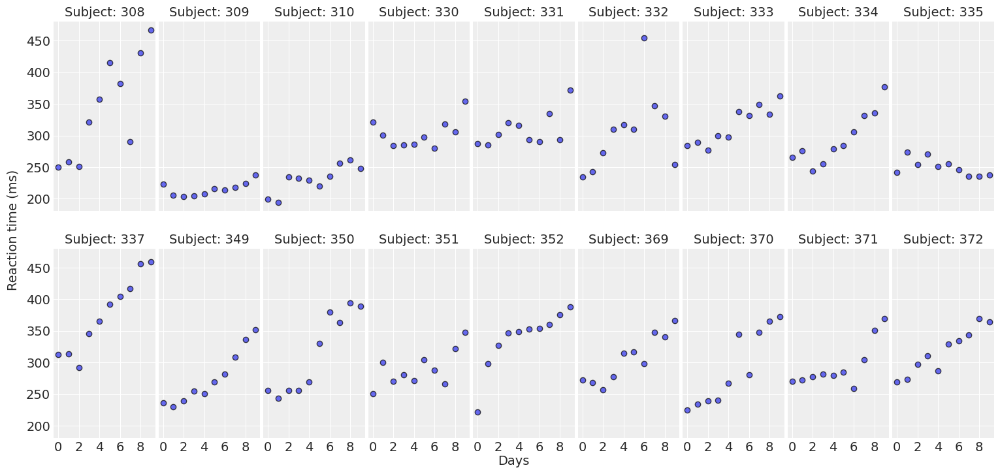
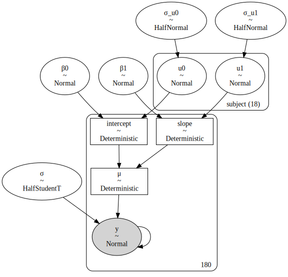
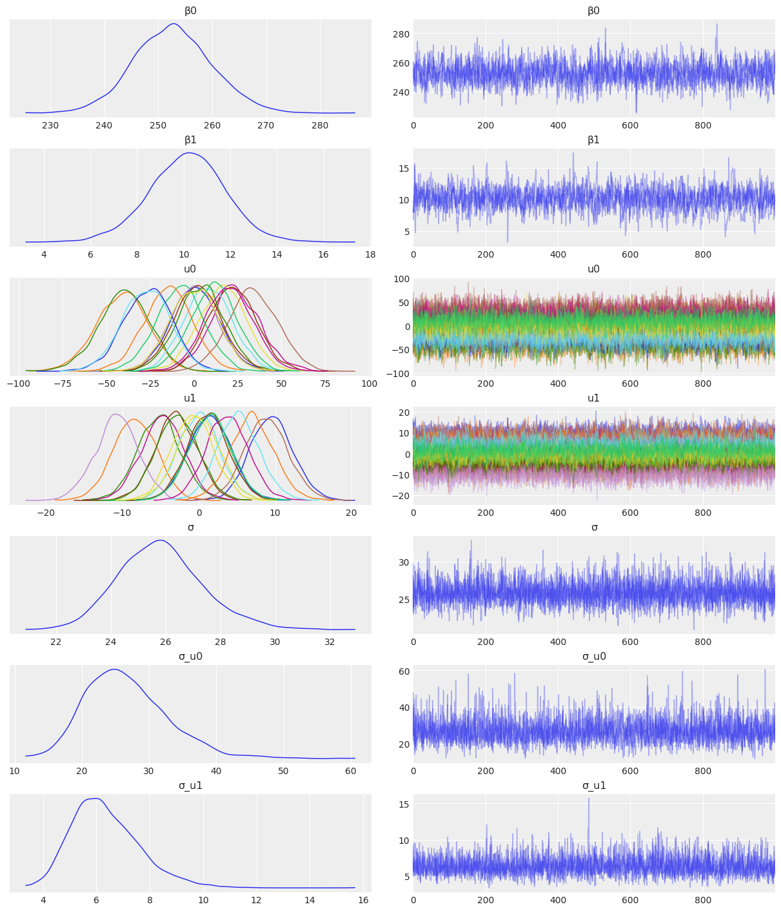
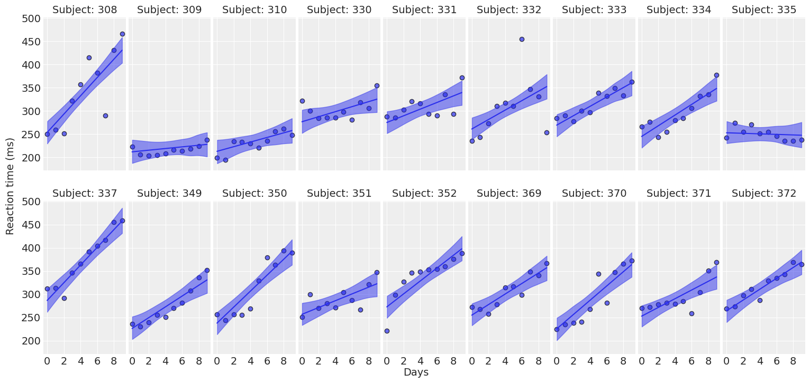
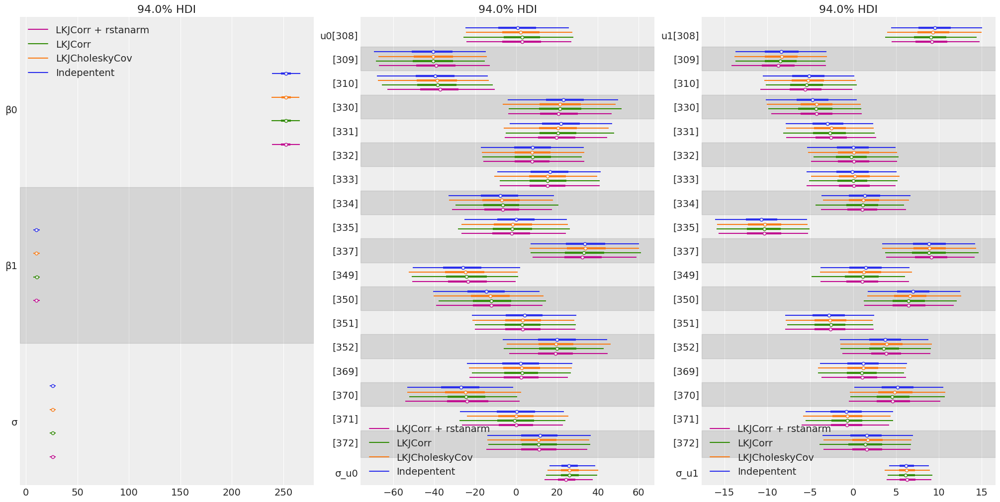
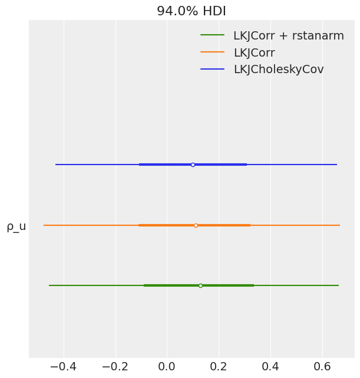

import arviz as az
import aesara.tensor as at
import matplotlib as mpl
import matplotlib.pyplot as plt
import numpy as np
import pandas as pd
import pymc as pmHierarchical modeling with the LKJ prior in PyMC
I describe how to use the LKJCholeskyCov and LKJCorr distributions to include correlated priors in Bayesian hierarchical modeling using PyMC.
Hierarchical modeling with the LKJ prior in PyMC
Throughout this blogpost, I will be working with the famous sleepstudy dataset. I’m going to estimate a hierarchical linear regression with both varying intercepts and varying slopes. The goal is to understand how to place non-independent priors for the group-specific effects in PyMC as efficiently as possible.
The sleepstudy dataset is derived from the study described in Belenky et al. (2003) and popularized in the lme4 R package. This dataset contains the average reaction time per day (in milliseconds) on a series of tests for the most sleep-deprived group in a sleep deprivation study. The first two days of the study are considered as adaptation and training, the third day is a baseline, and sleep deprivation started after day 3. The subjects in this group were restricted to 3 hours of sleep per night.
With that said, let’s get into the code!
%matplotlib inline
az.style.use("arviz-darkgrid")
mpl.rcParams["figure.facecolor"] = "white"Let’s get started by downloading and exploring sleepstudy dataset.
url = "https://raw.githubusercontent.com/vincentarelbundock/Rdatasets/master/csv/lme4/sleepstudy.csv"
data = pd.read_csv(url, index_col = 0)The following is a description of the variables we have in the dataset.
- Reaction: Average of the reaction time measurements on a given subject for a given day.
- Days: Number of days of sleep deprivation.
- Subject: The subject ID.
print(f"There are {len(data)} observations.")
data.head()There are 180 observations.| Reaction | Days | Subject | |
|---|---|---|---|
| 1 | 249.5600 | 0 | 308 |
| 2 | 258.7047 | 1 | 308 |
| 3 | 250.8006 | 2 | 308 |
| 4 | 321.4398 | 3 | 308 |
| 5 | 356.8519 | 4 | 308 |
print(f"Days range from {data['Days'].min()} to {data['Days'].max()}.")
print(f"There are J={data['Subject'].unique().size} subjects.")Days range from 0 to 9.
There are J=18 subjects.Let’s explore the evolution of the reaction times through the days for every subject.
def plot_data(data, figsize=(16, 7.5)):
fig, axes = plt.subplots(2, 9, figsize=figsize, sharey=True, sharex=True)
fig.subplots_adjust(left=0.075, right=0.975, bottom=0.075, top=0.925, wspace=0.03)
for i, (subject, ax) in enumerate(zip(data["Subject"].unique(), axes.ravel())):
idx = data.index[data["Subject"] == subject].tolist()
days = data.loc[idx, "Days"].values
reaction = data.loc[idx, "Reaction"].values
# Plot observed data points
ax.scatter(days, reaction, color="C0", ec="black", alpha=0.7)
# Add a title
ax.set_title(f"Subject: {subject}", fontsize=14)
ax.xaxis.set_ticks([0, 2, 4, 6, 8])
fig.text(0.5, 0.02, "Days", fontsize=14)
fig.text(0.03, 0.5, "Reaction time (ms)", rotation=90, fontsize=14, va="center")
return fig, axesplot_data(data);
For most of the subjects, there’s a clear positive association between Days and Reaction time. Reaction times increase as people accumulate more days of sleep deprivation. Participants differ in the initial reaction times as well as in the association between sleep deprivation and reaction time. Reaction times increase faster for some subjects and slower for others. Finally, the relationship between Days and Reaction time presents some deviations from linearity within the panels, but these are neither substantial nor systematic.
The model
The model we’re going to build today is a hierarchical linear regression, with a Gaussian likelihood. In the following description, I use the greek letter \(\beta\) to refer to common effects and the roman letter \(u\) to refer to group-specific (or varying) effects.
\[ y_{ij} = \beta_0 + u_{0j} + \left( \beta_1 + u_{1j} \right) \cdot {\text{Days}} + \epsilon_i \]
where
\[ \begin{aligned} y_{ij} &= \text{Reaction time for the subject } j \text{ on day } i \\ \beta_0 &= \text{Intercept common to all subjects} \\ \beta_1 &= \text{Days slope common to all subjects} \\ u_{0j} &= \text{Intercept deviation of the subject } j \\ u_{1j} &= \text{Days slope deviation of the subject } j \\ \epsilon_i &= \text{Residual random error} \end{aligned} \]
we also have
\[ \begin{aligned} i = 1, \cdots, 10 \\ j = 1, \cdots, 18 \end{aligned} \]
where \(i\) indexes Days and \(j\) indexes subjects.
From the mathematical description we notice both the intercept and the slope are made of two components. The intercept is made of a common or global intercept \(\beta_0\) and subject-specific deviations \(u_{0j}\). The same logic applies for the slope with both \(\beta_1\) and \(u_{1j}\).
Priors
Common effects
For the common effects, we Guassian independent priors.
\[ \begin{array}{c} \beta_0 \sim \text{Normal}\left(\bar{y}, \sigma_{\beta_0}\right) \\ \beta_1 \sim \text{Normal}\left(0, \sigma_{\beta_1}\right) \end{array} \]
Bambi centers the prior for the intercept at \(\bar{y}\), so do we. For \(\sigma_{\beta_0}\) and \(\sigma_{\beta_1}\) I’m going to use 50 and 10 respectively. We’ll use these same priors for all the variants of the model above.
Residual error
\[ \begin{aligned} \epsilon_i &\sim \text{Normal}(0, \sigma) \\ \sigma &\sim \text{HalfStudentT}(\nu, \sigma_\epsilon) \end{aligned} \]
Where \(\nu\) and \(\sigma_\epsilon\), both positive constants, represent the degrees of freedom and the scale parameter, respectively.
Group-specific effects
Throughout this post we’ll propose the following variants for the priors of the group-specific effects.
- Independent priors.
- Correlated priors.
- Using
LKJCholeskyCov. - Using
LKJCorr. - Usign
LKJCorrwith non-trivial standard deviation.
- Using
Each of them will be described in more detail in its own section.
Then we create subjects and subjects_idx. These represent the subject IDs and their indexes. These are used with the distribution of the group-specific coefficients. We also have the coords that we pass to the model and the mean of the prior for the intercept
# Subjects and subjects index
subjects, subjects_idx = np.unique(data["Subject"], return_inverse=True)
# Coordinates to handle dimensions of PyMC distributions and use better labels
coords = {"subject": subjects}
# Response mean -- Used in the prior for the intercept
y_mean = data["Reaction"].mean()
# Days variable
days = data["Days"].valuesModel 1: Independent priors
Group-specific effects: Independent priors
\[ \begin{array}{lr} u_{0j} \sim \text{Normal} \left(0, \sigma_{u_0}\right) & \text{for all } j:1,..., 18 \\ u_{1j} \sim \text{Normal} \left(0, \sigma_{u_1}\right) & \text{for all } j:1,..., 18 \end{array} \]
where the hyperpriors are
\[ \begin{array}{c} \sigma_{u_0} \sim \text{HalfNormal} \left(\tau_0\right) \\ \sigma_{u_1} \sim \text{HalfNormal} \left(\tau_1\right) \end{array} \]
where \(\tau_0\) and \(\tau_1\) represent the standard deviations of the hyperpriors. These are fixed positive constants. We set them to the same values than \(\sigma_{\beta_0}\) and \(\sigma_{\beta_1}\) respectively.
with pm.Model(coords=coords) as model_independent:
# Common effects
β0 = pm.Normal("β0", mu=y_mean, sigma=50)
β1 = pm.Normal("β1", mu=0, sigma=10)
# Group-specific effects
# Intercept
σ_u0 = pm.HalfNormal("σ_u0", sigma=50)
u0 = pm.Normal("u0", mu=0, sigma=σ_u0, dims="subject")
# Slope
σ_u1 = pm.HalfNormal("σ_u1", sigma=10)
u1 = pm.Normal("u1", mu=0, sigma=σ_u1, dims="subject")
# Construct intercept and slope
intercept = pm.Deterministic("intercept", β0 + u0[subjects_idx])
slope = pm.Deterministic("slope", (β1 + u1[subjects_idx]) * days)
# Conditional mean
μ = pm.Deterministic("μ", intercept + slope)
# Residual standard deviation
σ = pm.HalfStudentT("σ", nu=4, sigma=50)
# Response
y = pm.Normal("y", mu=μ, sigma=σ, observed=data["Reaction"])pm.model_to_graphviz(model_independent)
with model_independent:
idata_independent = pm.sample(draws=1000, chains=4, random_seed=1234)Auto-assigning NUTS sampler...
Initializing NUTS using jitter+adapt_diag...
Multiprocess sampling (4 chains in 2 jobs)
NUTS: [β0, β1, σ_u0, u0, σ_u1, u1, σ]
Sampling 4 chains for 1_000 tune and 1_000 draw iterations (4_000 + 4_000 draws total) took 33 seconds.
100.00% [8000/8000 00:31<00:00 Sampling 4 chains, 0 divergences]
az.plot_trace(
idata_independent,
var_names=["β0", "β1", "u0", "u1", "σ", "σ_u0", "σ_u1"],
combined=True,
chain_prop={"ls": "-"}
);
def plot_predictions(data, idata, figsize=(16, 7.5)):
# Plot the data
fig, axes = plot_data(data, figsize=figsize)
# Extract predicted mean
reaction_mean = idata.posterior["μ"]
for subject, ax in zip(subjects, axes.ravel()):
idx = (data["Subject"]== subject).values
days = data.loc[idx, "Days"].values
# Plot highest density interval / credibility interval
az.plot_hdi(days, reaction_mean[..., idx], color="C0", ax=ax)
# Plot mean regression line
ax.plot(days, reaction_mean[..., idx].mean(("chain", "draw")), color="C0")
return fig ,axesplot_predictions(data, idata_independent);
Compare inferences
groups = [
["β0", "β1", "σ"],
["u0", "σ_u0"],
["u1", "σ_u1"],
]
model_names = ["Indepentent", "LKJCholeskyCov", "LKJCorr", "LKJCorr + rstanarm"]
fig, ax = plt.subplots(1, 3, figsize = (20, 10))
for idx, group in enumerate(groups):
az.plot_forest(
[idata_independent, idata_lkj_cov, idata_lkj_corr, idata_lkj_corr_2],
model_names=model_names,
var_names=group,
combined=True,
ax=ax[idx],
)
az.plot_forest(
[idata_lkj_cov, idata_lkj_corr, idata_lkj_corr_2],
model_names=model_names[1:],
var_names=["ρ_u"],
combined=True
);
Conclusions
Conclusions
- We showed how to use correlated priors for group-specific coefficients.
- The posteriors resulted to be the same for the in all the cases.
- The correlated priors didn’t imply any benefit to our sampling process. However, this could be beneficial for more complex hierarchical models.
- What’s more, the model with the correlated priors took more time to sample than the one with independent priors.
- Attempting to replicate rstanarm approach takes even longer because we are forced to compute many things manually.
Notes and suggestions
- Sometimes, the models with correlated priors based on
pm.LKJCorrresulted in divergences. We needed to increasetarget_accept. - It would be good to be able to pass a random variable to
sd_distinpm.LKJCholeskyCov, and not just a stateless distribution. This forced me to usepm.LKJCorrand perform many manipulations manually, which was more error-prone and inefficient. - It would be good to check if there’s something in the LKJCorr/LKJCholeskyCov that could be improved. I plan to use
LKJCholeskyCovwithin Bambi in the future and I would like it to work as better as possible.
%load_ext watermark
%watermark -n -u -v -iv -wLast updated: Sun Jun 12 2022
Python implementation: CPython
Python version : 3.10.4
IPython version : 8.3.0
numpy : 1.21.6
pandas : 1.4.2
matplotlib: 3.5.2
arviz : 0.12.1
aesara : 2.6.6
pymc : 4.0.0
sys : 3.10.4 | packaged by conda-forge | (main, Mar 24 2022, 17:39:04) [GCC 10.3.0]
Watermark: 2.3.1